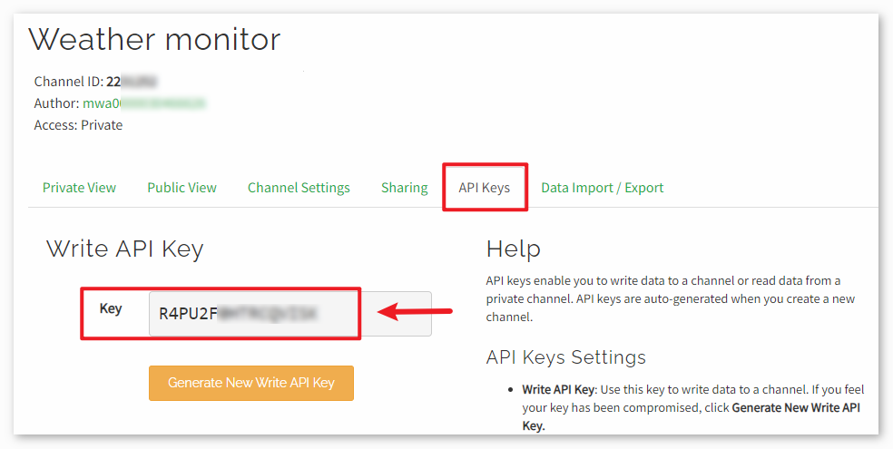

注釈
こんにちは、SunFounderのRaspberry Pi & Arduino & ESP32愛好家コミュニティへようこそ！Facebook上でRaspberry Pi、Arduino、ESP32についてもっと深く掘り下げ、他の愛好家と交流しましょう。
参加する理由は？
エキスパートサポート：コミュニティやチームの助けを借りて、販売後の問題や技術的な課題を解決します。
学び＆共有：ヒントやチュートリアルを交換してスキルを向上させましょう。
独占的なプレビュー：新製品の発表や先行プレビューに早期アクセスしましょう。
特別割引：最新製品の独占割引をお楽しみください。
祭りのプロモーションとギフト：ギフトや祝日のプロモーションに参加しましょう。
👉 私たちと一緒に探索し、創造する準備はできていますか？[ここ]をクリックして今すぐ参加しましょう！
ThingSpeakを使用した気象監視
このプロジェクトでは、大気圧センサーを用いて気温と気圧のデータを収集します。収集したデータは、定期的な時間間隔でESP8266モジュールとWi-Fiネットワークを介してThingSpeakクラウドプラットフォームに送信されます。
1. 回路の組み立て
注釈
ESP8266モジュールは安定した動作環境を提供するために高電流が必要なので、9Vのバッテリーが接続されていることを確認してください。

2. ThingSpeakの設定
ThingSpeak（ThingSpeak ）は、クラウド内でリアルタイムのデータストリームを集約、可視化、分析するIoT分析プラットフォームサービスです。ThingSpeakでは、デバイスからThingSpeakに投稿されたデータの即時の可視化が提供されます。ThingSpeak内でMATLAB®コードを実行する機能があるため、データが入ってくると同時にそのデータのオンライン解析と処理が可能です。ThingSpeakは、分析が必要なIoTシステムのプロトタイピングや概念実証によく使用されます。

2.1 ThingSpeakアカウントの作成
まず、ThingSpeakでアカウントを作成する必要があります。MATLABとの提携により、MathWorksの資格情報を使用して ThingSpeak にログインできます。
まだアカウントを持っていない場合は、MathWorksでアカウントを作成し、ThingSpeakアプリケーションにログインしてください。

2.2 チャンネルの作成
ログイン後、「Channels」>「My Channels」に進み、「New Channel」をクリックして新しいチャンネルを作成します。

このプロジェクトでは、「 Weather Monitor 」という名前のチャンネルを作成し、二つのフィールドを設定する必要があります： Field 1 は「 Temperature（気温） 」、 Field 2 は「 Atmospheric Pressure（大気圧） 」。

3. コードの実行
ultimate-sensor-kit\iot_project\wifi\05-Weather_monitorパス内にある05-Weather_monitor.inoファイルを開くか、このコードを Arduino IDE に貼り付けます。注釈
ライブラリをインストールする場合は、Arduinoのライブラリマネージャーで "Adafruit BMP280" と検索してインストールしてください。
使用するWi-FiのSSIDとパスワード、すなわち
mySSIDとmyPWDを設定してください。String mySSID = "your_ssid"; // Wi-FiのSSID String myPWD = "your_password"; // Wi-Fiのパスワード
さらに、ThingSpeakチャンネルのAPIキーで
myAPIを修正してください。String myAPI = "xxxxxxxxxxxx"; // APIキー

ここで 独自のAPIキーを確認し、必ず秘密にしてください。
正確なボードとポートを選択した後、 書き込み ボタンをクリックしてください。
シリアルモニターを開き（ボーレートは 9600 に設定）、接続成功のメッセージが表示されるまでお待ちください。


4. コードの説明
このキットに含まれているESP8266モジュールは、すでにATファームウェアが書き込まれています。従って、ESP8266モジュールはATコマンドで制御できます。このプロジェクトでは、Arduino UnoボードとESP8266モジュール間での通信を可能にするために、ソフトウェアシリアルを使用しています。Arduino Unoボードは、ESP8266モジュールにネットワーク接続およびリクエスト送信のためのATコマンドを送ります。詳しくは ESP8266 AT Instruction Set を参照してください。
Unoボードはセンサーの値を読み取り、ESP8266モジュールにATコマンドを送信します。ESP8266モジュールは、ネットワークに接続してThingSpeakサーバーにリクエストを送信します。
環境設定 & グローバル変数:
このセクションでESP8266モジュールとの通信を確立し、必要なグローバル変数を宣言します。
#include <SoftwareSerial.h> SoftwareSerial espSerial(2, 3); #define DEBUG true String mySSID = "your_ssid"; String myPWD = "your_password"; String myAPI = "xxxxxxxxxxxx"; String myHOST = "api.thingspeak.com"; String myPORT = "80"; unsigned long lastConnectionTime = 0; const unsigned long postingInterval = 20000L;
BMP280センサーの設定:
このコードは、BMP280センサーのデータ読み取りのためのセットアップを行います。
#include <Wire.h> #include <Adafruit_BMP280.h> #define BMP280_ADDRESS 0x76 Adafruit_BMP280 bmp; unsigned bmpStatus; float pressure; float temperature;
初期化（Setup関数）:
setup()関数は、シリアル通信を初期化し、ESP8266モジュールをWi-Fiに接続し、BMP280センサーを初期化します。void setup() { Serial.begin(9600); espSerial.begin(115200); // Initialize the ESP8266 module sendATCommand("AT+RST", 1000, DEBUG); //Reset the ESP8266 module sendATCommand("AT+CWMODE=1", 1000, DEBUG); //Set the ESP mode as station mode sendATCommand("AT+CWJAP=\"" + mySSID + "\",\"" + myPWD + "\"", 1000, DEBUG); //Connect to WiFi network // Initialize the bmp280 sensor bmpStatus = bmp.begin(BMP280_ADDRESS); if (!bmpStatus) { Serial.println(F("Could not find a valid BMP280 sensor, check wiring or " "try a different address!")); while (1) delay(10); // Stop code execution if the sensor is not found. } /* Default settings from datasheet. */ bmp.setSampling(Adafruit_BMP280::MODE_NORMAL, /* Operating Mode. */ Adafruit_BMP280::SAMPLING_X2, /* Temp. oversampling */ Adafruit_BMP280::SAMPLING_X16, /* Pressure oversampling */ Adafruit_BMP280::FILTER_X16, /* Filtering. */ Adafruit_BMP280::STANDBY_MS_500); /* Standby time. */ }
loop()関数:
メインループは、最後のデータ送信から20秒経過したかどうかをチェックします。もし経過していれば、データを送信します。
postingInterval変数の値を変更して、データを送信する間隔を調整できます。void loop() { //Send data according to the time interval you set. if (millis() - lastConnectionTime > postingInterval) { sendData(); } }
データ送信:
この関数は温度と気圧を読み取り、GETリクエストを構築し、ThingSpeakにデータを送信します。
GET /update?api_key=xxxxxx&field1=xx&field2=xxxxxxという形式でGETリクエストを構築し、ThingSpeakサーバーに3つのパラメータを送信しました。api_key: 認証と権限管理のためのAPIキーfield1: 温度を記録するためのパラメータ、"field1"と名付けられていますfield2: 大気圧を記録するためのパラメータ、"field2"と名付けられています
void sendData() { // Read the temperature and pressure from the BMP280 sensor pressure = bmp.readPressure(); temperature = bmp.readTemperature(); // If the data is invalid, print an error message and stop sending it if (isnan(pressure) || isnan(temperature)) { Serial.println("Failed to read from BMP sensor!"); return; } // Construct the GET request for ThingSpeak String sendData = "GET /update?api_key=" + myAPI; sendData += "&field1=" + String(temperature); sendData += "&field2=" + String(pressure); // Send the GET request to ThingSpeak via the ESP8266 sendATCommand("AT+CIPMUX=1", 1000, DEBUG); //Allow multiple connections sendATCommand("AT+CIPSTART=0,\"TCP\",\"" + myHOST + "\"," + myPORT, 1000, DEBUG); // Start a TCP connection to ThingSpeak sendATCommand("AT+CIPSEND=0," + String(sendData.length() + 4), 1000, DEBUG); // Send the GET request espSerial.find(">"); // Wait for the ">" character from the ESP8266 espSerial.println(sendData); // Send the GET request Serial.println(sendData); // Print the values Serial.println("Value to be sent: "); printBMP(); // Call the printBMP function to print the temperature and pressure sendATCommand("AT+CIPCLOSE=0", 1000, DEBUG); // Close the TCP connection lastConnectionTime = millis(); // Update the last connection time }
補助関数:
これらの関数は、ESP8266にATコマンドを送信したり、BMP280センサーの読み取り値を表示するのに役立ちます。
void sendATCommand(String command, const int timeout, boolean debug) { ... // (refer to the provided code for the full sendATCommand function) } void printBMP() { ... // (refer to the provided code for the full printBMP function) }
参考